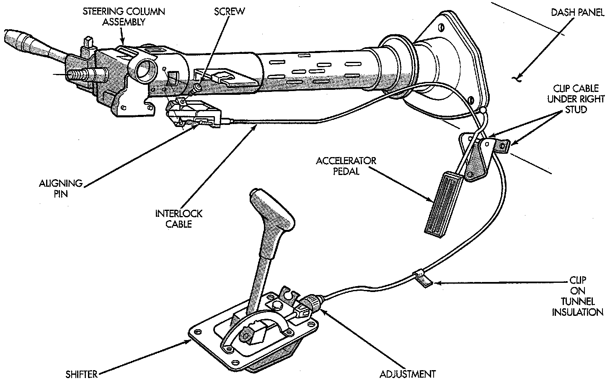
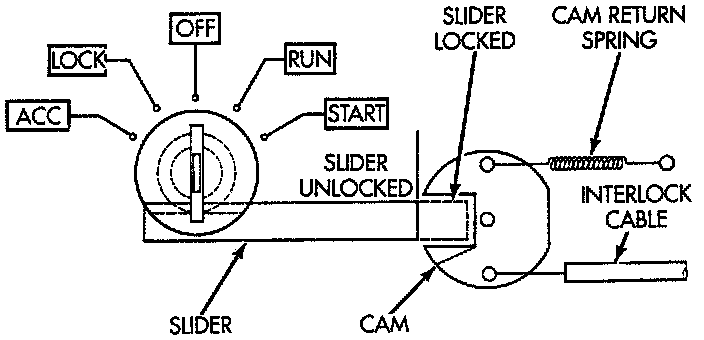

Interlock Operation


The Brake Transmission Shifter/Ignition Interlock (BTSI), is a cable and solenoid operated system. It interconnects the automatic transmission floor mounted shifter to the steering column ignition switch. The system locks the shifter into the PARK position. The Interlock system is engaged whenever the ignition switch is in the LOCK or ACCESSORY position. An additional electrically activated feature will prevent shifting out of the PARK position unless the brake pedal is depressed at least one-half an inch. A magnetic holding device in line with the park lock cable is energized in PARK when the ignition is in the OFF-LOCK position. When the key is in the OFF or RUN position and the brake pedal is depressed, the shifter is unlocked and will move into any position. The interlock system also prevents the ignition switch from being turned to the LOCK or ACCESSORY position. Unless the shifter is fully locked into the PARK position.